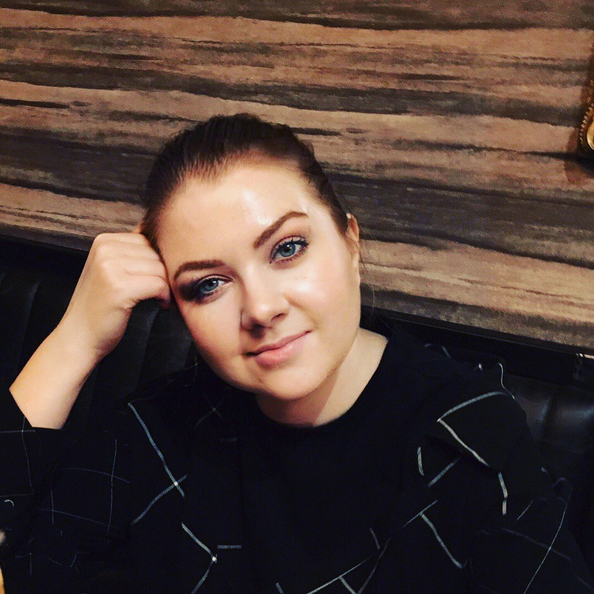

Hi there, my name is Maria
I’m an investigative tech journalist & researcher from Russia. My expertise lies in uncovering complex technological and political intersections. Proficient in OSINT, data analysis, and cultivating trusted sources. I have worked with leading Russian and international media outlets, including the Moscow bureau of Reuters, Meduza, RTVI, and Kommersant. Five-time nominee for the Redkollegia Award.

Investigations
View all
FSB unit linked to Navalny poisoning now controls the Runet
The FSB’s Second Service, the unit linked to the poisoning of Alexey Navalny, has displaced other security factions to become the lead curator of the Russian internet. This change marks a move toward more radical, systematic shutdowns of VPNs and messaging apps as the "political police" department takes final authority over digital policy.

The Great Hack: How Aeroflot Was Brought to a Standstill
My investigation into the devastating cyberattack on Aeroflot reveals how a breach at a minor IT subcontractor escalated into a nationwide crisis, grounding scores of flights and paralyzing the airline’s booking systems. The article details how hackers exploited deep-seated vulnerabilities in Russia’s aviation infrastructure, exposing the fragility of critical systems that had long been considered secure.

The Orthodox telecom official who invented the sovereign Runet
A revealing piece explores the quiet but strategic rise of Andrey Lipov, a little-known Kremlin insider who now leads Roskomnadzor, Russia’s powerful internet regulator. It uncovers his central role in shaping the “sovereign Runet,” his ties to Orthodox networks, and his influence over the country’s digital future.